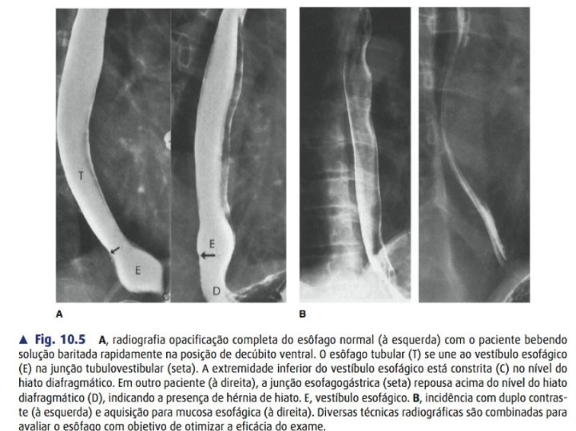

Três grandes temas do esôfago em um só bloco: DRGE + hérnia de hiato (fundoplicaturas — Nissen 360° × Toupet 270° × Dor 180°), acalasia (Chicago 4.0 · POEM × Heller-Dor × dilatação · não esquecer Chagas no Brasil) e câncer de esôfago (CEC × adenocarcinoma · TNM AJCC 8ª · CROSS/FLOT · esofagectomia Ivor-Lewis × McKeown × transhiatal). Base: SAGES GERD 2023, SAGES Hérnia de Hiato 2024, SAGES POEM 2024, Chicago Classification 4.0, NCCN 2.2026, AJCC 8ª ed.
O esôfago cai em prova por três eixos que a banca gosta de misturar: doença do refluxo, distúrbio motor (acalasia) e neoplasia. A pegadinha é diferenciar clínica e conduta.
| — | DRGE / hérnia hiato | Acalasia | Câncer de esôfago |
|---|---|---|---|
| Sintoma-chave | Pirose + regurgitação; disfagia é alarme | Disfagia paradoxal (sólido = líquido), regurgitação | Disfagia progressiva (sólido→líquido) + perda ponderal |
| Mecanismo | EEI incompetente / hérnia hiatal | EEI que não relaxa + aperistalse | Tumor obstrutivo (CEC ou ADC) |
| Exame-rei | pHmetria 24h (+EDA, manometria) | Manometria de alta resolução (HRM) | EDA + biópsia; estadiar com TC/PET/EUS |
| Idade típica | Qualquer; obesos | 25–60 a (bimodal) | >50–60 a |
| Cirurgia | Fundoplicatura | Miotomia (POEM/Heller) ou dilatação | Esofagectomia ± neoadjuvância |
DRGE = refluxo do conteúdo gástrico que causa sintomas incômodos e/ou lesão. (o "esfíncter" da entrada do estômago fica frouxo e deixa o ácido subir)
| Tipo | Nome | Característica |
|---|---|---|
| I | Deslizamento (sliding) | JEG sobe acima do diafragma. 95% dos casos; ligada à DRGE. |
| II | Paraesofágica pura (rolling) | Fundo gástrico herniado, JEG normal no lugar. |
| III | Mista | JEG deslocada + fundo herniado (a paraesofágica mais comum). |
| IV | Complexa | Outro órgão no saco (cólon, baço, delgado). |

| Técnica | Grau | Quando |
|---|---|---|
| Nissen | 360° (total) | Padrão na DRGE com motilidade normal. Maior controle do refluxo. |
| Toupet | 270° posterior | Preferida se dismotilidade / peristalse fraca; menos disfagia e gas-bloat. |
| Dor | 180° anterior | Válvula parcial anterior — clássica após miotomia de Heller. |
Acalasia = distúrbio motor primário com perda dos neurônios inibitórios do plexo mioentérico → EEI que não relaxa + aperistalse do corpo. (a válvula de baixo fica travada fechada e o esôfago não empurra a comida)
| Tipo | HRM | Resposta ao tratamento |
|---|---|---|
| I clássica | Aperistalse, sem pressurização panesofágica | Boa |
| II | Pressurização panesofágica ≥20% das deglutições | Melhor resposta (95%) |
| III espástica | ≥20% de contrações prematuras/espásticas | Pior resposta → POEM (miotomia longa e ajustável) |
Não há cura da aperistalse — o objetivo é reduzir a pressão do EEI para aliviar disfagia.
| Opção | Mecanismo | Notas |
|---|---|---|
| POEM | Miotomia endoscópica por túnel submucoso | Alta eficácia; miotomia ajustável → melhor no tipo III. Desvantagem: DRGE pós (sem válvula antirrefluxo). |
| Heller laparoscópica + fundoplicatura parcial (Dor) | Miotomia cirúrgica + válvula anti-refluxo | Padrão cirúrgico duradouro; a Dor 180° protege do refluxo e cobre a mucosa. |
| Dilatação pneumática | Balão rompe fibras do EEI | Eficaz (tipos I/II); risco de perfuração; costuma precisar repetir. |
| Toxina botulínica | Bloqueia acetilcolina no EEI | Efeito temporário; reservada a idosos/alto risco cirúrgico. |
| — | Carcinoma espinocelular (CEC) | Adenocarcinoma (ADC) |
|---|---|---|
| Local | Terço médio/superior | Terço distal / JEG |
| Fatores | Tabaco + álcool, bebidas quentes, tilose, acalasia, estenose cáustica | Barrett, DRGE crônica, obesidade, tabaco |
| Tendência | Mais comum no mundo/Brasil | Crescente no Ocidente |
Abrir a pars flaccida e expor o pilar diafragmático direito, que é a referência de toda a dissecção.
Dissecção mediastinal do esôfago até obter ≥ 2–3 cm de esôfago intra-abdominal sem tensão.
Criar a janela por trás do esôfago identificando e preservando os troncos vagais anterior e posterior.
Seccionar os gástricos curtos com selante, liberando o fundo gástrico.
Pontos separados posteriores com fio inabsorvível 2-0 (Ethibond/seda), calibrando sobre bougie. Considerar tela em hiatos muito grandes.
Trazer o fundo pela janela retroesofágica e deslizá-lo de um lado ao outro, como quem engraxa um sapato, confirmando que não torceu.
(Se a "faixa" desliza livre para os dois lados, ela está reta. Se prende, está torcida.)Suturar fundo-fundo incorporando a parede esofágica, com 2 a 3 pontos, sobre o bougie.
Igual à da fundoplicatura, com dissecção suficiente para expor a JEG e o esôfago distal.
Seccionar as fibras longitudinais e circulares até expor a mucosa, que deve abaular através da miotomia.
Endoscopia intraoperatória ou insuflação com azul de metileno / ar sob líquido.
Cobrir a miotomia com o fundo anterior, suturando às bordas musculares.
| Técnica | Acessos | Anastomose |
|---|---|---|
| Ivor-Lewis | Abdome + tórax direito (2 campos) | Torácica (tumor de terço médio/distal) |
| McKeown | Abdome + tórax D + pescoço (3 campos) | Cervical (tumores mais altos) |
| Transhiatal | Abdome + pescoço (sem toracotomia) | Cervical; sem abrir o tórax |
Liberar o estômago preservando obrigatoriamente a arcada gastroepiploica direita. Ligar gástrica esquerda (com a linfadenectomia), gástricos curtos e gastroepiploica esquerda. Tubulizar a grande curvatura com grampeador linear, criando um conduto de 4–5 cm de largura. Piloroplastia ou piloromiotomia conforme escola.
Ivor-Lewis/McKeown: toracotomia ou toracoscopia direita, com linfadenectomia mediastinal sob visão. Transhiatal: dissecção romba, às cegas, pelo hiato e pelo pescoço.
Subir o tubo gástrico pelo mediastino posterior (leito esofágico, o trajeto mais curto) e anastomosar no tórax ou no pescoço.
| Momento | Fio / material | Observação |
|---|---|---|
| Hiatoplastia (pilares) | Poliéster/seda 2-0 (Ethibond) inabsorvível | Pontos em X posteriores; calibrar sobre bougie 56–60 Fr |
| Confecção da válvula (Nissen/Toupet/Dor) | Poliéster/seda 2-0/3-0 inabsorvível | Incorporar parede esofágica; válvula curta e frouxa |
| Reforço da miotomia / mucosa lesada | Poliglactina 4-0 (Vicryl) fino | Sutura da mucosa se perfuração |
| Tubo gástrico (esofagectomia) | Grampeador linear + reforço PDS/Vicryl 3-0 | Invaginar linha de grampos |
| Anastomose esôfago-gástrica | Grampeador circular EEA ou manual PDS 3-0/4-0 | Testar; drenar; jejunostomia p/ nutrição |
| Fechamento aponeurose | PDS 1 / náilon 1 | Relação fio:ferida 4:1 |
(itens representativos, elaborados no estilo das bancas — não são reproduções literais)